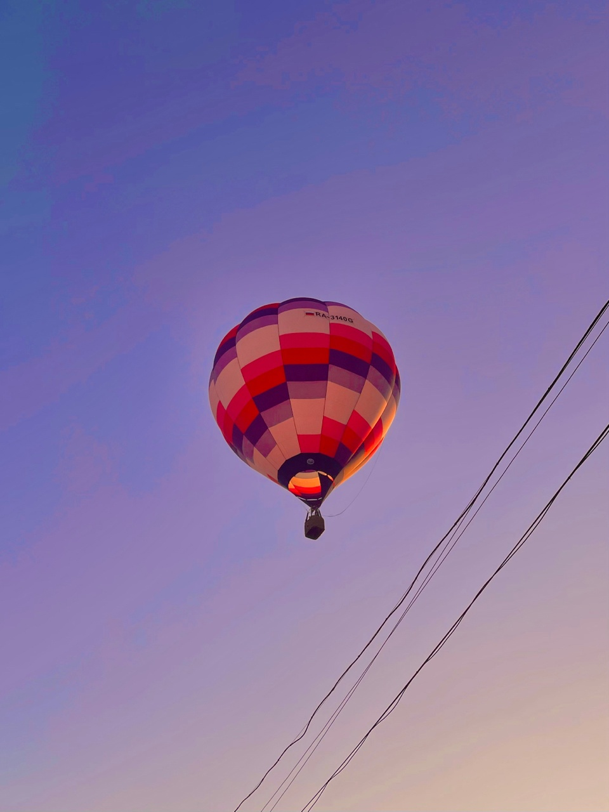

Фритрек и нулевой спринт: Подготовка к работе
</HTML>
Это было самое начало пути. На этом этапе важно было проникнуться основами и настроиться на учёбу. И, возможно, подумать, как новые знания могут повлиять на ваше будущее.
Для меня это был не первый раз когда я училась в практикуме, так что я не падала в пучину неизвестности и нереалистичных ожиданий. Но мотивации было много! Помню, как долго я организовывала себе рабочее место, пока ждала начала первого спринта.